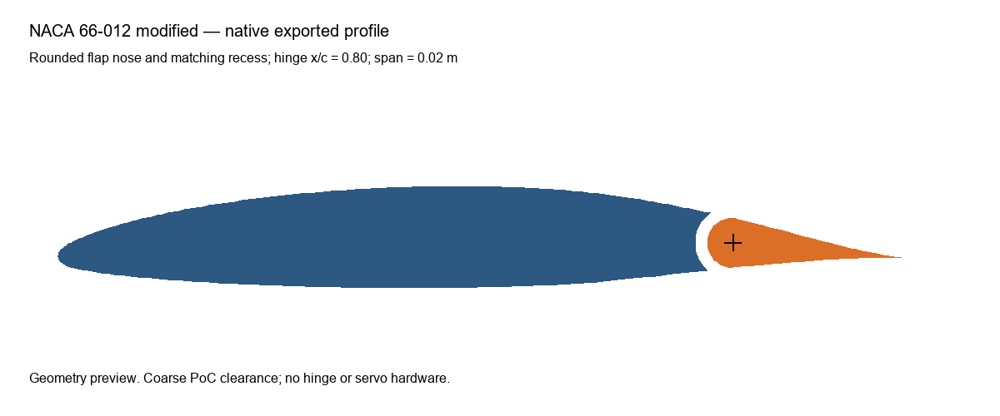
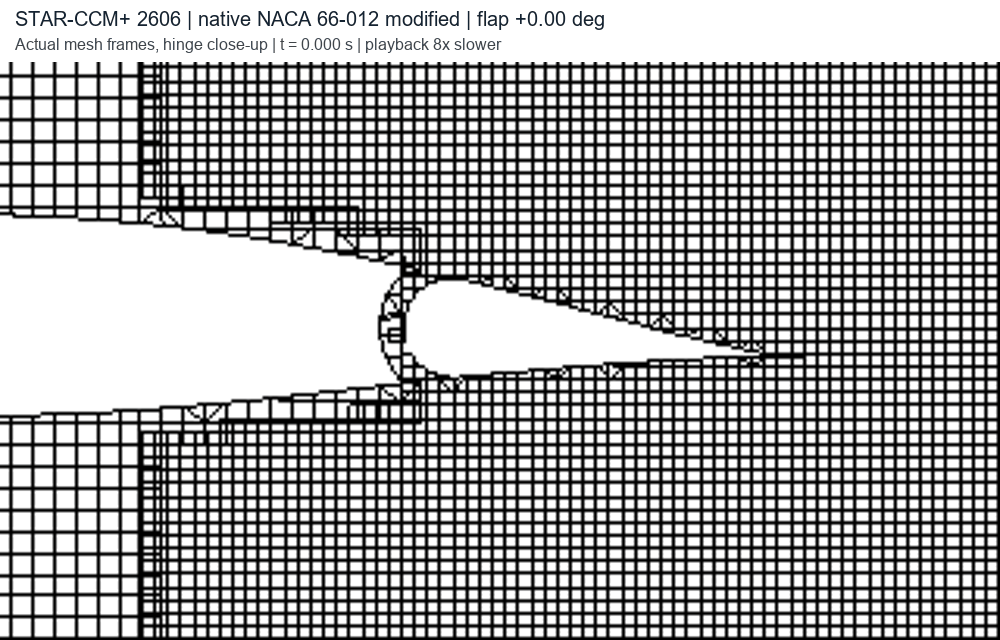

Ruch siatki i krótki transient w spokojnej wodzie zakończone. Gotowy case: FlapPOC_2606_working.sim. To demonstrator mechaniki; siły są orientacyjne.
Profil pochodzi z natywnej geometrii istniejącego NACA 66-012 modified. Zawias leży na lokalnej linii szkieletowej przy x/c = 0,80: x = 0.951837640 m, z = 0.021292732 m. Oś jest równoległa do rozpiętości, w kierunku +y. Klapka obejmuje około 20% cięciwy i ma zaokrąglony nos o promieniu 35.13 mm, dopasowaną wnękę i powiększony prześwit promieniowy 17.85 mm. Najmniejsza odległość części w geometrycznej kontroli −5°…+5° wyniosła 17.79 mm.
Układ quasi-2D ma rozpiętość 0,02 m i płaszczyzny symetrii na bokach. Ruch sztywny klapki obsługuje osobny region overset. Siatka ma 44,763 komórek, bez warstw pryzmatycznych. Jednofazowa woda ma gęstość 1000 kg/m³ i lepkość 0,001 Pa s. Prędkość 1 m/s, model laminarny i mała domena służą wyłącznie testowi mechaniki. Nie odpowiadają docelowemu badaniu 18 m/s z VOF i SST.

Najpierw wykonano 100 kroków po 0,002 s przy zamrożonym solverze przepływu. Kąt zadany: δ = 5° sin(2πt/0,2 s). Jeden pełny cykl obejmuje oba skrajne wychylenia. Obrót kontrolowano przez odczyt transformacji ruchu po stronie solvera dla wirtualnego punktu związanego sztywno z klapką. Klatki rzeczywistej siatki potwierdzają kierunek ruchu i oba skrajne wychylenia. Nie używano średnich z aktywnych powierzchni overset jako znacznika położenia.
| Kontrola | Wynik |
|---|---|
| Maksymalna różnica transformacji i kąta zadanego | 3.19744e-14° |
| Minimalna objętość komórki | 3.00568e-08 m³ |
| Minimalna jakość komórki | 0.150092 |
| Minimalna face validity | 1 |
Pełny zapis testu ruchu. Animacja pokazuje klatki z rzeczywistej siatki STAR, odtwarzane osiem razy wolniej.

Animacja całej siatki i profilu
Po przejściu testu ruchu odblokowano przepływ i wykonano 30 kroków, łącznie 0,06 s, z maksymalnie 8 iteracjami wewnętrznymi. Fx i Fz obejmują obie części profilu. Moment Mh dotyczy tylko klapki i jest liczony względem zawiasu. Dodatnie kierunki to +x, +z i moment wokół +y. Siły dotyczą warstwy o rozpiętości 0,02 m, bez przeliczania na pełną rozpiętość.
| Raport | Minimum | Maksimum | Ostatnia próbka |
|---|---|---|---|
| Fx_N | -1.34962 | 173.304 | -1.32843 |
| Fz_N | -19.4332 | 250.359 | -19.4332 |
| Mh_Nm | -22.8713 | 1.44044 | 1.44044 |
Przebiegi Fx, Fz i Mh. Tak krótki rozruch nie daje ustalonych sił ani walidacji hydrodynamicznej.
Gotowy plik zatrzymuje kontynuację po osiągnięciu t = 0,4 s. Zawiera ruch, raporty i scenę Flap POC mesh motion. Pliki mesh_ready i motion_passed zachowują wcześniejsze punkty kontrolne. Geometria, makra i dzienniki są w podfolderach geometry, macros, runs i audit.
Dopiero po ocenie tej mechaniki należy przenieść geometrię i ruch na dokładniejszą siatkę. Dalsze porównanie calm–wave musi korzystać z tej samej nowej siatki i spójnej fizyki. C01 pozostaje oryginalnym odniesieniem dotychczasowej kampanii. Fale, DRL i model zastępczy nie były uruchamiane w tym etapie.
Oryginalny C01 i jego odrębna kopia zachowały SHA-256 9af4857b948e0494088b5421f8ede100e66344fc2631cc00030406640d7cc295. Nie zmieniano C01, W01, W03 ani istniejących kolejek. Nie uruchomiono wykluczonej starej W07 λ = 92,5 m. Próby PoC korzystały wyłącznie z CPU; przydział zwiększono do 4 procesów po zgodzie użytkownika.
Data raportu: 2026-11-02T15:43:53.591350+01:00. Dane kontroli i sumy plików.